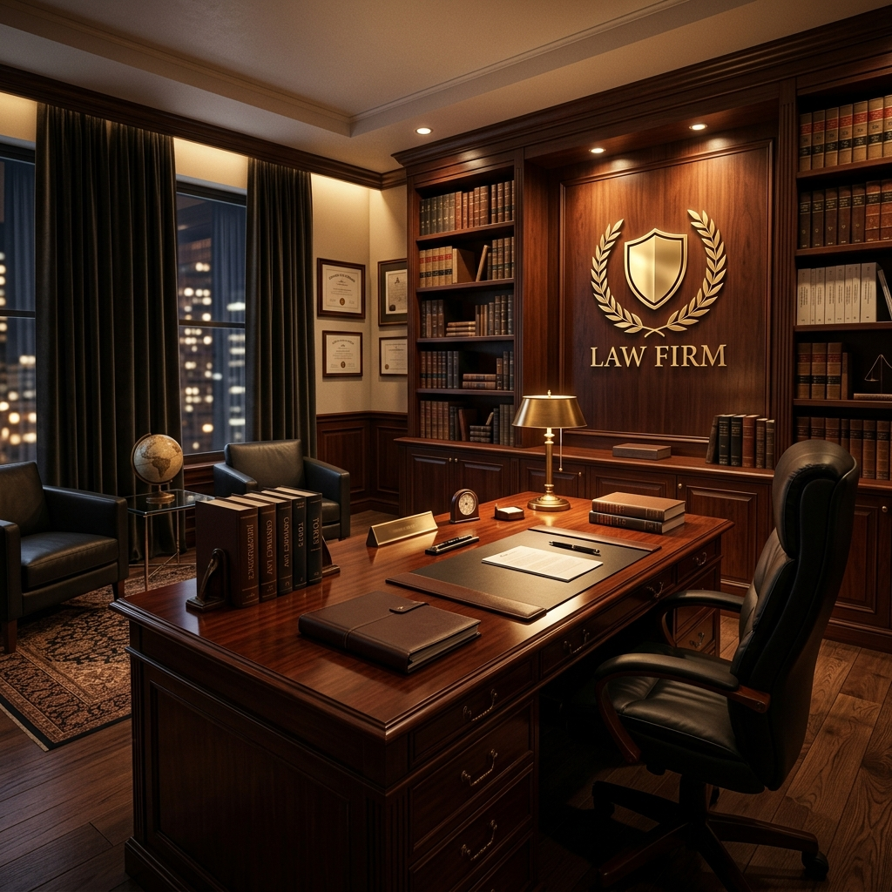

A full-service law firm providing comprehensive legal services, strategic counsel, and effective representation before the Supreme Court of India, High Courts, District Courts, DRT, DRAT, and NCLT.

Protecting rights, safeguarding interests, facilitating settlements, and empowering clients through informed legal guidance.
Established in 2012 under the leadership of Advocate Vinay Kumar Dubey, United Legal is a full-service law firm committed to providing comprehensive legal services, strategic counsel and effective representation across diverse areas of law.
With a strong foundation in litigation, corporate advisory and dispute resolution, the firm caters to the legal requirements of individuals, businesses, corporate entities, financial institutions and organisations. Our practice encompasses Civil and Commercial, Banking and Finance, SARFAESI proceedings, Insolvency and Bankruptcy, Intellectual Property Rights, Cyber Law and Data Protection, Arbitration and Mediation, Consumer Disputes, White Collar Crimes and other allied areas of law.
United Legal believes that every legal matter requires an individualised approach, supported by sound legal research, meticulous preparation and a clear understanding of the client’s objectives. We focus on developing effective legal strategies, providing practical legal solutions and representing our clients before the appropriate courts, tribunals and judicial forums, including the Supreme Court of India, High Courts, District Courts, DRT, DRAT and NCLT.
Under the leadership of Advocate Vinay Kumar Dubey, the firm strives to combine professional expertise, strategic thinking and a client-centric approach in addressing complex legal and commercial challenges. We place particular emphasis on professional integrity, confidentiality, transparency and maintaining the highest standards of legal practice.
At United Legal, our objective extends beyond resolving disputes. We endeavour to protect rights, safeguard interests, facilitate settlements and empower our clients through informed legal guidance.
United Legal stands for a commitment to justice, a pursuit of legal excellence and a belief that every individual and institution deserves effective legal representation.
Founder & Driving Force, United Legal
Advocate Vinay Kumar Dubey (V. K. Dubey) is a Mumbai- and Delhi-based legal professional with extensive experience in Civil and Criminal Litigation, Banking and Finance, Corporate Disputes and Commercial Matters. With a practice spanning various courts and judicial forums, he has been actively involved in handling complex legal matters before the Bombay High Court, Supreme Court of India, District and Trial Courts, Debt Recovery Tribunals (DRT) and National Company Law Tribunals (NCLT).
He is the driving force behind United Legal, where he provides leadership and strategic direction across its diverse areas of legal practice. He also heads V. K. Dubey Associates, a Mumbai & Delhi-based law firm established under his leadership, which operates with the guiding philosophy of “Justice for All.” Through his professional engagements, he has developed considerable experience in litigation, banking and financial disputes, corporate matters, settlements and legal advisory services. Apart from his legal practice, Mr. Dubey serves as a Member of the Hindi Advisory Committee under the Government of India.
His commitment extends beyond the courtroom through various social welfare and philanthropic initiatives. He has established organisations including the Brahman International Business Orientation (BIBO) Foundation, Brahman Ekta Manch Charitable Trust and Gyanodaya Seva Samiti, through which he contributes towards education, community development and assistance to underprivileged sections of society. He also serves as the National Legal Head of Prime Minister’s Atmanirbhar Bharat Abhiyan Sanghthan and remains actively associated with grassroots social initiatives.
In recognition of his contributions to the legal profession and society, he has received several accolades, including the “Popular Civilian Icon of India Award”. Advocate V. K. Dubey was also honoured at the 2nd International Bar & Bench Badminton Championship held in London, recognising his contribution and association with the legal fraternity. His professional philosophy is thus founded on legal integrity, strategic representation and a commitment to making justice accessible. Through United Legal, he continues to advance a client-focused approach to legal services, combining professional expertise with dedication to the principles of justice and fairness.
Dedicated sections detailing our litigation, corporate advisory, and dispute-resolution capabilities across eight core domains of law.
Domestic & commercial arbitration, interim measures, award enforcement & negotiated settlements.
Read SectionIBC liquidation, recovery & claim enforcement, NCLT, NCLAT & High Court proceedings.
Read SectionTrademarks, copyrights, patents, designs, passing off, injunctions & anti-counterfeiting.
Read SectionCybercrime, online fraud, data breaches, intermediary liability, digital evidence & IT Act.
Read SectionDeficiency in services, product liability, e-commerce, real estate & Consumer Commissions.
Read SectionCorporate & banking fraud, PMLA, ED, CBI, EOW, SFIO matters, bail & criminal defence.
Read SectionMoney recovery, summary suits, contracts, specific performance, property & writ petitions.
Read SectionSARFAESI Section 13 & 17 proceedings, NPA resolution, OTS, DRT & DRAT litigation.
Read SectionOur Arbitration & Mediation practice provides legal advice and representation in domestic and commercial disputes, with a focus on efficient and strategic dispute resolution. We assist individuals, businesses, companies and institutions in resolving contractual and commercial disputes through arbitration and mediation. We advise clients on arbitration agreements, appointment of arbitrators, commencement of proceedings, interim measures, conduct of arbitral proceedings, evidence, hearings and enforcement of arbitral awards.
Our team also represents clients in court proceedings connected with arbitration, including matters concerning interim reliefs, appointment of arbitrators, challenges to arbitral awards and enforcement of awards, as applicable. In mediation and negotiated settlements, we assist clients in identifying practical solutions and structuring settlements while protecting their legal and commercial interests. We handle disputes at both the pre-litigation and post-litigation stages, where alternative dispute resolution may provide an effective means of resolution. We represent clients before arbitral tribunals, courts and other appropriate forums and provide end-to-end assistance throughout the dispute-resolution process.
Our Insolvency & Bankruptcy practice focuses on insolvency-related disputes, liquidation matters and recovery proceedings arising under the Insolvency and Bankruptcy Code, 2016 (IBC). We assist creditors, corporate debtors, personal guarantors and other stakeholders in protecting and enforcing their legal and financial interests during insolvency and liquidation proceedings.
Our practice primarily involves liquidation proceedings, recovery and enforcement of claims, distribution of assets and disputes arising during the insolvency process. We advise clients on their rights, obligations and available remedies in relation to claims, assets, recoveries and other issues arising during liquidation. We also represent clients in disputes and proceedings concerning insolvency and liquidation, including challenges to orders, claims and decisions arising during the process.
Our team provides strategic legal advice and representation based on the facts, applicable provisions of the IBC and the interests of the client. We further handle appeals and related litigation before the NCLT, NCLAT, High Courts and other appropriate courts and forums, including challenges to orders passed during insolvency and liquidation proceedings. Through detailed legal analysis, strategic advice and focused representation, United Legal assists clients in navigating complex insolvency, liquidation and recovery disputes and pursuing appropriate remedies under applicable law.
Our Intellectual Property Rights practice focuses on IP-related disputes and litigation involving trademarks, copyrights, patents, designs, trade names and other intellectual property. We represent businesses, companies, creators, authors, artists, brand owners and other rights holders in protecting, enforcing and defending their intellectual property rights. Our practice covers disputes relating to infringement, passing off, ownership, assignment, licensing, commercial exploitation and unauthorised use of intellectual property.
We advise clients on appropriate legal remedies and assist in developing effective strategies for protecting their IP assets. We handle trademark and copyright infringement disputes, piracy matters, trade name and domain name disputes, IP ownership and assignment disputes, licensing and royalty disputes, and commercial disputes involving intellectual property. Our team also assists with cease-and-desist notices, interim injunctions, urgent protective reliefs, opposition and cancellation proceedings, anti-counterfeiting actions and defence against infringement claims.
We further represent clients in IP-related litigation, appeals and other proceedings before the High Courts, Commercial Courts, District Courts, Intellectual Property Division and other appropriate authorities and forums. Through strategic advice, detailed legal research and focused representation, United Legal assists clients in protecting and enforcing their intellectual property rights and pursuing appropriate remedies in IP disputes. Representation before High Courts, Commercial Courts, District Courts, Supreme Court and other appropriate forums.
Our Cyber Law & Data Protection practice focuses on legal disputes, regulatory issues and litigation arising from the use of digital technologies, electronic transactions, online platforms and information systems. We assist individuals, businesses, companies, institutions and other stakeholders in addressing legal challenges relating to cybercrime, data protection, privacy, digital evidence and electronic communications.
Our practice covers matters involving online financial fraud, identity theft, hacking, unauthorised access to computer systems, phishing, cyber harassment, online impersonation, data breaches and misuse of confidential information. We advise clients on their legal rights, available remedies and obligations under the Information Technology Act, 2000, applicable data protection laws and other relevant legal frameworks. We also assist in matters involving intermediary liability, social media disputes, online content, digital intellectual property infringement and disputes arising from electronic contracts and transactions.
Our team provides legal assistance in filing complaints, responding to cybercrime allegations, coordinating with appropriate investigating authorities and pursuing remedies before competent courts and other appropriate forums. We further represent clients in cyber-related civil and criminal proceedings, regulatory disputes and matters involving the collection, preservation and admissibility of electronic evidence. Through strategic legal advice, detailed research and focused representation, United Legal assists clients in addressing complex cyber law disputes and protecting their legal interests in the digital environment.
Our Consumer Disputes & Protection practice focuses on legal disputes arising from deficiencies in goods and services, unfair trade practices, defective products, misleading representations and violations of consumer rights. We assist individuals, businesses, companies, manufacturers, service providers, developers and other stakeholders in resolving consumer-related disputes and protecting their legal and commercial interests.
Our practice covers disputes involving deficiency in services, product liability, defective goods, unfair trade practices, misleading advertisements, refund claims, delayed delivery, non-performance of contractual obligations and disputes arising from commercial transactions. We advise clients on their rights, obligations and available remedies under the Consumer Protection Act, 2019 and other applicable laws. Our team assists in the preparation and filing of consumer complaints, written statements, replies, appeals and other legal proceedings before the appropriate Consumer Disputes Redressal Commissions.
We also represent clients in matters involving e-commerce transactions, online consumer grievances, real estate-related consumer disputes, banking and insurance service deficiencies and disputes concerning various service providers. Further, we advise businesses and organisations on consumer law compliance, product liability exposure, grievance redressal mechanisms and legal risks arising from consumer-facing operations. Through effective legal strategy, negotiation and focused representation, United Legal assists clients in pursuing appropriate remedies and resolving consumer disputes before competent authorities and judicial forums.
Our White Collar Crimes & Economic Offences practice focuses on complex financial, commercial and corporate offences involving allegations of fraud, financial irregularities, misappropriation, corruption and other economic misconduct. We represent individuals, directors, promoters, companies, corporate executives, professionals and other stakeholders facing investigations, allegations and proceedings arising from financial and commercial transactions.
Our practice covers matters involving corporate fraud, cheating, criminal breach of trust, forgery, financial misrepresentation, diversion of funds, embezzlement, money laundering allegations, banking fraud and offences involving financial institutions and corporate entities. We advise clients during the stages of investigation, inquiry, prosecution and trial, while safeguarding their legal rights and procedural protections. Our team assists in responding to summons, notices, search and seizure proceedings, investigation-related requirements and other actions initiated by investigating agencies and regulatory authorities.
We also represent clients in proceedings involving the Enforcement Directorate (ED), Central Bureau of Investigation (CBI), Economic Offences Wing (EOW), Serious Fraud Investigation Office (SFIO) and other competent authorities, as applicable. Our practice further includes bail applications, anticipatory bail, quashing of criminal proceedings, defence in criminal trials, appeals and other appropriate legal remedies. Through detailed examination of financial transactions, legal documentation and applicable statutory provisions, United Legal provides strategic legal advice and representation in complex white-collar crime and economic offence matters.
Our Civil & Commercial Litigation practice focuses on the resolution of civil, contractual, property and business-related disputes before courts, tribunals and other appropriate judicial forums. We represent individuals, companies, businesses, developers, contractors, financial institutions and other stakeholders in complex civil and commercial disputes involving contractual obligations, recovery of money, property rights and commercial transactions.
Our practice covers money recovery suits, summary suits, contractual disputes, specific performance proceedings, injunctions, declaration suits, property disputes, breach of agreements, recovery of outstanding dues and enforcement of legal rights and obligations. We advise clients on pre-litigation remedies, legal notices, institution of proceedings, interim reliefs, pleadings, evidence, trial strategy and execution of decrees. Our team also handles disputes arising from commercial agreements, business transactions, construction contracts, development agreements, shareholder arrangements and other contractual relationships.
We further represent clients in proceedings involving appeals, revisions, review petitions, writ petitions and execution proceedings before the District Courts, Commercial Courts, High Courts and the Supreme Court, as applicable. Our practice also includes enforcement of decrees and orders, recovery of monetary claims and pursuing appropriate remedies in cases involving non-performance of contractual obligations. Through comprehensive legal research, strategic case preparation and effective courtroom representation, United Legal assists clients in protecting their civil and commercial rights and pursuing appropriate legal remedies.
Our Banking, Finance & SARFAESI practice focuses on disputes and legal proceedings arising from banking transactions, lending arrangements, financial facilities, recovery of outstanding dues and enforcement of security interests. We assist banks, financial institutions, NBFCs, corporate borrowers, individual borrowers, creditors, guarantors and other stakeholders in addressing complex banking and financial disputes.
Our practice covers matters relating to Non-Performing Assets (NPAs), loan defaults, recovery proceedings, enforcement of security interests, mortgage disputes, guarantees, loan restructuring and settlement of outstanding financial liabilities. We advise clients on their rights, obligations and available remedies under the SARFAESI Act, 2002, Recovery of Debts and Bankruptcy Act, 1993 and other applicable banking and financial laws. Our team handles proceedings involving demand notices under Section 13(2), measures taken under Section 13(4), objections and representations under Section 13(3A), and applications before the Debt Recovery Tribunal under Section 17 of the SARFAESI Act.
We also represent clients in proceedings before the Debt Recovery Tribunal (DRT), Debt Recovery Appellate Tribunal (DRAT), High Courts and other appropriate judicial forums. Our practice further includes legal assistance in One-Time Settlement (OTS), compromise settlements, corporate loan restructuring, recovery of secured and unsecured debts, challenges to possession and auction proceedings, and disputes involving personal and corporate guarantees. Through strategic legal advice, detailed examination of financial documentation and focused representation, United Legal assists clients in protecting their financial and legal interests and pursuing appropriate remedies in banking and recovery disputes.
Visit or contact our Mumbai office Monday through Saturday, 10:00 AM to 8:00 PM.